PCB DIY
Introduction
Pourquoi la méthode par soft laser ?
La méthode de fabrication de PCB par laser de faible puissance permet d’obtenir des circuits imprimés d’une bonne précision, pour un coût très réduit au regard de la qualité du résultat final.
Comment fonctionne cette méthode ?
Cette méthode appliquer une couche protectrice sur la carte vierge, modelée à l’aide de la graveuse laser, afin que le perchlorure de fer n’élimine le cuivre qu’aux endroits souhaités. Une couche de solder mask est ensuite appliquée puis regravée afin de dégager les zones destinées aux soudures.
On obtient ainsi une carte de bonne qualité, répondant aux besoins de nombreux projets électroniques qui nécessitent habituellement de commander leurs PCB auprès de sites spécialisés tels que JLCPCB ou Eurocircuits.
Pourquoi ne pas graver directement au laser pour enlever le cuivre ?
Les lasers permettant de graver le cuivre doivent être extrêmement puissant ou d’une autre technologie mais ces modèles sont très couteux. Le laser utilisé dans cette méthode doit être juste assez puissant pour graver de la peinture ce qui a permis de prendre un laser à moins de 100€.
Pourquoi ne pas utiliser une fraiseuse CNC pour faire les cartes ?
Il est vrai qu’utiliser une fraiseuse CNC permet de retirer directement le cuivre sur les cartes et évite ainsi les étapes avec le perchlorure de fer MAIS cette méthode est déjà plus couteuse mais également (et à mon sens) plus complexe à mettre en place car il y a bien plus de paramètres à prendre en compte que simplement exposer le laser sur le dessus de la carte. C’est une méthode qui est également plus longue et moins précise qu’un très fin laser. Avec la fraiseuse, les têtes peuvent s’user et perdre en précision ce qui n‘est pas le cas avec un laser. A savoir qu’il est évidement possible d’arriver à une incroyable précision avec une fraiseuse CNC, meilleure que la méthode au laser, mais avec des fraiseuses CNC 5 fois plus cher que la méthode utilisée ici.
Quels sont les avantages et les inconvénients de cette méthode ?
Through-Hole
Cette méthode est très adaptée aux composants SMA. En effet, l’imprécision liée à la réalisation manuelle des trous pour les composants traversants les rendre difficiles à souder. Il ne reste parfois que très peu de matière autour du trou, ou un mauvais alignement peut rendre la soudure complexe voir impossible (voir image étape 10). Il est toutefois possible de résoudre ce problème en adaptant le footprint de chaque composant traversant afin de le rendre légèrement plus large. Cependant, cette modification rallonge le temps de conception et peut compromettre l’intégrité de certains composants traversants.
Double couche
À l’heure actuelle, il n’est pas réellement facile de réaliser un PCB double couche avec cette méthode. Il est nécessaire de retourner la carte et d’effectuer un alignement très précis, ce qui est particulièrement difficile à réaliser manuellement. Il reste cependant possible d’effectuer des connexions sur l’autre couche à l’aide de fins fils de cuivre permettant de relier certains points de la carte entre eux.
Rapidité
Cette méthode est relativement rapide, avec un temps de fabrication d’environ 1 à 2 heures. Elle permet ainsi d’obtenir une carte fonctionnelle le jour même de sa modélisation. Cette rapidité permet de diminuer le temps nécessaire au prototypage et, par conséquent, de raccourcir le temps global de conception d’un projet.
Coût
Cette méthode ne nécessite aucun équipement particulièrement coûteux. La graveuse laser m’a coûté environ 110 €, tandis que le reste du matériel représente moins de 90 €. Le coût total du matériel peut donc être estimé à environ 200 €. Après cet investissement initial, seuls les PCB vierges doivent être régulièrement achetés, puisque la majorité du matériel est réutilisable pour chaque nouvelle carte. J’ai déjà eu l’occasion de réaliser une dizaine de cartes avec cette méthode. Le coût de fabrication de ces cartes aurait été largement supérieur à 200 € si elles avaient été commandées auprès d’un fabricant spécialisé.
Facilité de mise en oeuvre
Cette méthode est relativement simple à mettre en pratique une fois que chaque étape est bien maîtrisée. Sa mise au point m’a cependant demandé un certain temps, notamment parce qu’aucun tutoriel ne présentait exactement cette méthode. Je me suis donc basé sur les avantages des différentes méthodes existantes afin de sélectionner les techniques qui me semblaient les plus pertinentes et de les combiner pour obtenir un procédé adapté à mes besoins. Cependant, avec le guide présenté ci-dessous, je suis convaincu qu’il est possible d’obtenir une carte de bonne qualité dès la première réalisation.
Ecologie
Cette méthode présente également un intérêt sur le plan environnemental. Contrairement à la commande de PCB auprès de fabricants situés à l’étranger, elle permet de réaliser directement les prototypes sur place et limite ainsi les besoins en transport qui sont très polluants (Cargo, avion, etc).
La fabrication industrielle de PCB nécessite par ailleurs des procédés et des équipements importants en matière de consommation d’énergie et de ressources. Avec cette méthode, les déplacements et les commandes sont limités principalement à l’achat ponctuel de PCB vierges, de solder mask et des autres consommables nécessaires, qui peuvent pour la plupart être réutilisés.
Conclusion
Comme expliqué précédemment, cette méthode ne convient pas à tous les projets. Je reste cependant persuadé qu’une bonne partie des prototypes et des petits projets électroniques peuvent être réalisés de cette manière. Cela permettrait de limiter le recours systématique à la fabrication industrielle pour des besoins qui peuvent être satisfaits localement.
Matériel nécessaire
- Petite graveuse laser
- Petits bacs en plastique
- Pinceau
- Solder mask UV
- Bombe de peinture mat
- Perchlorure de fer
- Plaque de cuivre vierge
- Cotton tiges
- Alcool isopropylique
Étape 1
Lors de la conception du PCB
Création du cadre d'alignement
Lors de la conception du PCB, il est très important de créer un cadre sur le Bottom Copper Layer ou le Top Copper Layer, en fonction de la couche sur laquelle vous travaillez, ainsi que sur le Solder Mask Layer correspondant. En effet, afin que, dans LaserGRBL, les couches de cuivre et de solder mask soient parfaitement alignées, il est nécessaire qu’elles possèdent exactement le même cadre, placé au même endroit.
DONC, comme dans l’exemple de conception ci-dessous, je crée un cadre sur le Bottom Copper Layer, puis je reproduis exactement le même cadre sur le Bottom Solder Mask Layer.
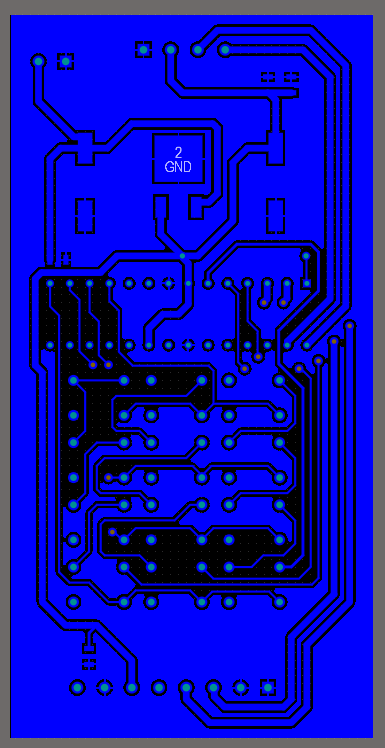
Note : Ici, le polygone GND fait office de cadre pour le Bottom Copper Layer.
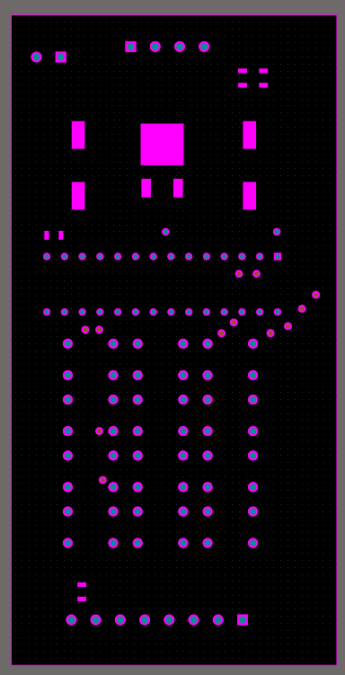
Ces cadres permettent alors d’aligner correctement les différentes couches dans le laser afin d’enlever le solder mask aux endroits souhaités et d’obtenir un bon résultat.
Utilisation de « vias »
Comme expliqué dans les désavantages, il n’est pas possible de réaliser une carte à deux couches, et les through-hole sont difficiles à mettre en place. Il est cependant possible de créer un « via » suffisamment large pour permettre une bonne soudure et qui servirait à relier un autre via, à l’aide d’un fil de cuivre, afin de pouvoir effectuer une connexion par l’autre côté de la carte.
On observe sur la conception ci-dessous que plusieurs vias ont été créés afin que, par la suite, deux fils de cuivre placés sur le top puissent traverser la carte jusqu’au bottom et y être soudés. Ils permettent ainsi de relier deux endroits qui n’auraient pas pu être connectés autrement.
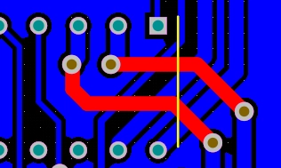
Note : Dans cette conception, les vias n’étaient pas suffisamment larges et les soudures étaient donc complexes à réaliser. Il est donc très important de calculer correctement leurs dimensions et d’effectuer des tests en fonction du fil utilisé afin d’obtenir un bon résultat.
Cette approche est donc à prendre en compte lors de la conception du PCB si des passages sur l’autre couche sont nécessaires.
Étape 2
Prétraitement
Cette étape permet de préparer le PCB vierge aux traitements qui vont suivre. En effet, lors de sa fabrication et de son transport, la carte peut subir des frottements et présenter certaines imperfections qu’il est nécessaire de corriger afin d’obtenir une gravure uniforme sur l’ensemble de sa surface.
- 01 Poncer le cuivre afin d’obtenir une surface propre et parfaitement lisse.
- 02 Nettoyer la carte à l’eau afin d’éliminer les résidus liés au ponçage.
- 03 Faire sécher soigneusement la carte avant de passer à l’étape suivante.
Étape 3
Peinture protectrice
Cette étape permet d’appliquer la peinture qui va protéger le cuivre aux endroits où il ne faut pas que le perchlorure de fer l’enlève.
- 01 Appliquer une fine couche de peinture à la bombe en faisant des mouvements de gauche à droite et en essayant d’être le plus homogène possible. Il faut simplement recouvrir la surface avec la peinture, sans mettre une couche trop épaisse, car elle serait plus difficile à enlever par la suite.
- 02 Faire sécher la peinture avec un ventilateur pour accélérer le séchage.
- 03 Attendre au moins 30 minutes, puis vérifier si la peinture est encore légèrement collante. Si c’est le cas, elle n’est pas encore complètement sèche.
Étape 4
Gravure de la peinture
Cette étape permet de modeler la couche de protection afin d’enlever le cuivre aux endroits souhaités.
Préparer l’image
- 01Importer le fichier PNG de la Copper Layer. Utiliser reaConverter pour convertir le fichier GBL ou GTL en PNG.
- 02Effectuer une symétrie verticale de l’image si la carte est réalisée sur le Bottom Layer. Pour une carte réalisée sur le Top Layer, aucune symétrie n’est nécessaire.
- 03Vérifier les couleurs dans LaserGRBL. Les zones apparaissant en noir correspondent aux endroits où le laser va retirer la peinture, et donc aux endroits où le cuivre sera ensuite éliminé par le perchlorure de fer. Si les couleurs sont inversées, utiliser l’option « Inversion des couleurs ».
Régler LaserGRBL
Dans les paramètres de gravure, sélectionner les réglages suivants :
- Noir et blanc
- Tracé par ligne
- Direction : horizontale
- Qualité : 20 lignes/mm
Dans le menu « Image cible », configurer les paramètres suivants :
- Vitesse de gravure : 4000 mm/min
- Mode laser : M3
- S-MIN : 0
- S-MAX : 400
- Cocher « Taille automatique » afin de conserver la taille réelle de l’image PNG de la Copper Layer.
Positionner la carte
- 01Positionner la carte avec la face recouverte de peinture orientée vers le laser.
- 02Vérifier que la zone de gravure reste entièrement à l’intérieur de la carte en utilisant la fonction « Framing ».
- 03Une fois l’emplacement déterminé, utiliser d’autres cartes afin de créer un repère de positionnement. Celui-ci permettra de replacer la carte de manière parfaitement alignée lors de l’étape de gravure du Solder Mask.
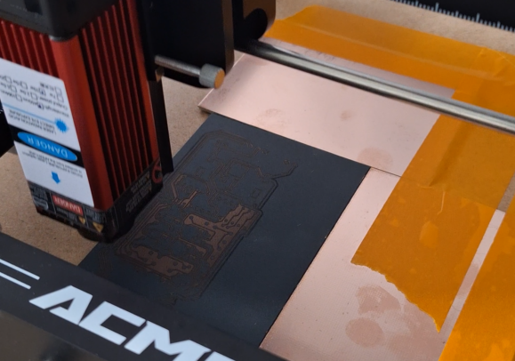
Effectuer les gravures
- 01Mettre les lunettes de protection, puis lancer la gravure horizontale.
- 02Une fois la gravure terminée, ne pas toucher à la carte.
- 03Aller dans « Fichier » → « Recharger le dernier fichier », puis modifier la direction de gravure en sélectionnant « Vertical ». Vérifier que tous les autres paramètres sont identiques.
- 04Mettre les lunettes de protection, puis lancer à nouveau la gravure.
- 05Une fois la gravure terminée, ne pas toucher à la carte.
- 06Aller dans « Fichier » → « Recharger le dernier fichier », puis sélectionner la direction « Diagonal ». Vérifier une nouvelle fois que tous les autres paramètres sont identiques.
- 07Mettre les lunettes de protection, puis lancer la dernière gravure.
Nettoyer et contrôler
Nettoyer les zones gravées à l’aide d’un coton-tige et d’un peu d’eau. Cela permet d’éliminer les petits résidus laissés par le passage du laser ainsi que le dernier film de peinture éventuellement présent sur le cuivre.
Le cuivre doit alors être clairement visible, comme présenté sur l’image ci-dessous.
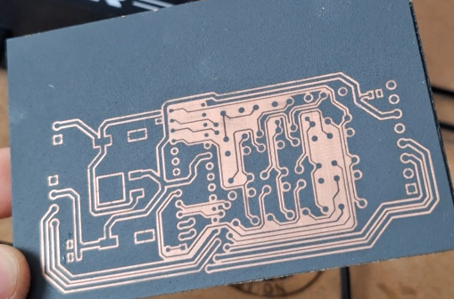
Étape 5
Enlever le cuivre
Cette étape permet d’enlever le cuivre aux endroits où il n’y a pas de peinture protectrice.
- 01 Plonger la carte, peinture vers soi, dans un bac contenant du perchlorure de fer.
- 02 Faire bouger le bac de droite à gauche, puis d’avant en arrière, afin de faire circuler le liquide sur la carte.
- 03 Passer délicatement un pinceau à poils doux sur la carte afin de faire pénétrer le perchlorure de fer dans les zones les plus fines.
- 04 Sortir régulièrement la carte, l’essuyer et vérifier devant une source de lumière si tout le cuivre non protégé par la peinture a bien été retiré. Si nécessaire, replonger la carte et recommencer les étapes précédentes.
- 05 Lorsque tout le cuivre a été retiré, nettoyer la carte à l’eau afin d’éliminer le perchlorure de fer restant sur sa surface.
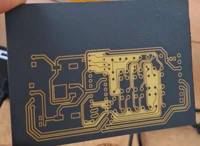
Étape 6
Révéler le cuivre
Avec un papier imbibé d’éthanol, enlever la peinture afin de faire apparaître le cuivre caché durant les étapes précédentes.
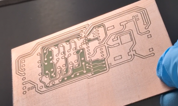
Il est important de vérifier qu’aucun court-circuit n’est présent avant d’appliquer le solder mask. Il est intéressant d’effectuer cette vérification à l’aide d’un test de continuité, associé à une observation au microscope numérique.
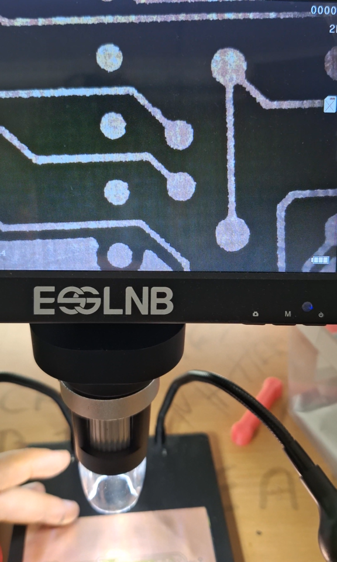
Étape 7
Application du solder mask
Le solder mask permet d’obtenir une couche isolante sur les zones où aucune soudure ne sera réalisée. Il protège ainsi le cuivre et limite les risques de courts-circuits avec les éléments environnants.
- 01 Tendre une toile avec un maillage suffisamment fin pour obtenir une application précise, tout en conservant des ouvertures assez grandes pour permettre le passage du solder mask. Un maillage de 80 peut par exemple être utilisé. La toile permet d’appliquer le solder mask de manière uniforme : celui-ci ne peut traverser que les ouvertures du maillage, ce qui permet d’obtenir une couche régulière une fois la toile retirée.
- 02 Appliquer le solder mask à l’aide d’une carte rigide, par exemple une ancienne carte HUBO, afin de l’étaler uniformément sur toute la surface de la carte. Retirer délicatement le maillage, puis faire sécher le solder mask sous une lampe UV pendant environ 15 minutes.
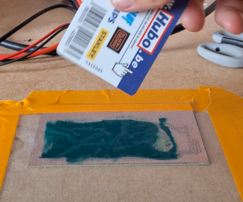
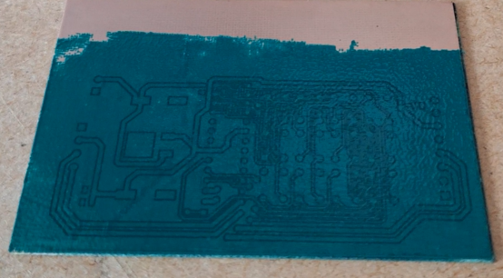
Étape 8
Gravure du solder mask
Cette étape permet d’enlever le solder mask aux endroits où des soudures doivent être réalisées, afin de laisser le cuivre apparent.
Préparer le fichier
- 01Importer le fichier PNG du Solder Mask. Utiliser reaConverter pour convertir le fichier GBS ou GTS en PNG.
- 02Effectuer une symétrie verticale de l’image si la carte est réalisée sur le Bottom Layer. Pour une carte réalisée sur le Top Layer, aucune symétrie n’est nécessaire.
- 03Vérifier les couleurs. Les zones apparaissant en noir correspondent aux endroits où le laser va retirer le solder mask. Si les couleurs sont inversées, utiliser l’option « Inversion des couleurs ».
Régler LaserGRBL
Dans les paramètres de gravure, sélectionner les réglages suivants :
- Noir et blanc
- Tracé par ligne
- Direction : horizontale
- Qualité : 20 lignes/mm
Dans le menu « Image cible », configurer les paramètres suivants :
- Vitesse de gravure : 2000 mm/min
- Mode laser : M3
- S-MIN : 0
- S-MAX : 900
Positionner la carte
Positionner la carte avec la face recouverte de solder mask orientée vers le laser, dans la même position et contre les mêmes cartes de repérage que lors de la première gravure. Cela permet de conserver un alignement précis entre les différentes couches.
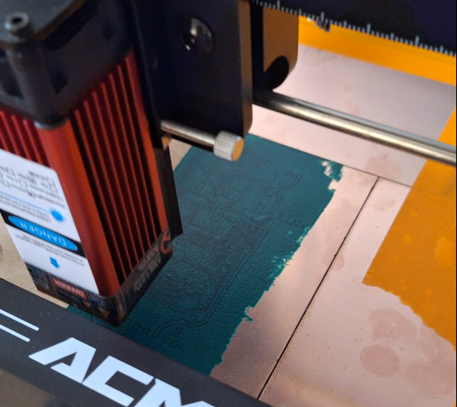
Effectuer les gravures
- 01Mettre les lunettes de protection, puis lancer la gravure horizontale.
- 02Une fois la gravure terminée, ne pas toucher à la carte.
- 03Recharger le dernier fichier, sélectionner la direction « Vertical », puis vérifier que tous les autres paramètres sont identiques.
- 04Mettre les lunettes de protection, puis lancer à nouveau la gravure. Une fois terminée, ne pas toucher à la carte.
- 05Recharger le dernier fichier et sélectionner la direction « Diagonal ». Vérifier une nouvelle fois que tous les autres paramètres sont identiques.
- 06Mettre les lunettes de protection, puis lancer la dernière gravure.
Nettoyer et contrôler
Cette méthode permet d’effectuer la gravure dans plusieurs directions afin d’éliminer un maximum de solder mask. Elle évite ainsi de laisser de fines lignes ou de petits résidus susceptibles de gêner les soudures.
Nettoyer les zones gravées à l’aide d’un coton-tige et d’un peu d’alcool isopropylique. Cela permet d’éliminer les petits résidus laissés par le passage du laser ainsi que le dernier film de solder mask éventuellement présent sur le cuivre.
Le cuivre doit alors être clairement visible aux endroits destinés aux soudures, comme présenté sur l’image ci-dessous.
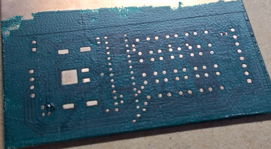
Étape 9
Couper la carte
Étape 10
Faire les trous (si nécessaire)
Afin d’obtenir des trous petits et relativement précis, il est intéressant d’utiliser un drill stand permettant de forer perpendiculairement à la carte. Il est possible d’en imprimer un en 3D : il ne nécessite alors que l’achat de quelques vis et tiges filetées, ce qui évite de dépenser 30 € uniquement pour cet usage.
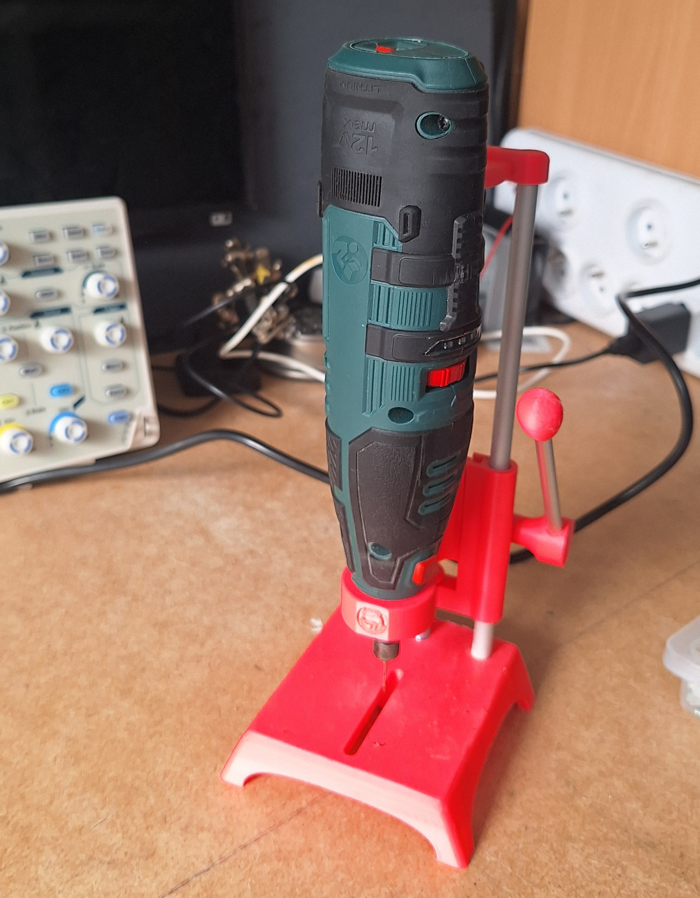
Comme expliqué dans les inconvénients, cette méthode n’est pas parfaite car, vu la taille des trous, il est facile de ne pas être parfaitement aligné. Même lorsque l’alignement est correct, il ne reste souvent pas assez de cuivre autour du trou pour obtenir une bonne soudure.
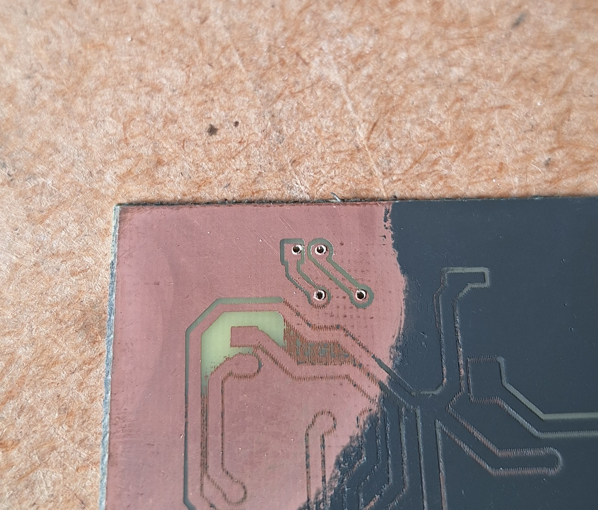
Résultat final
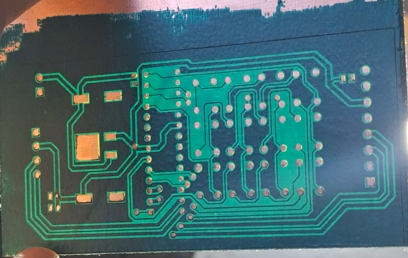